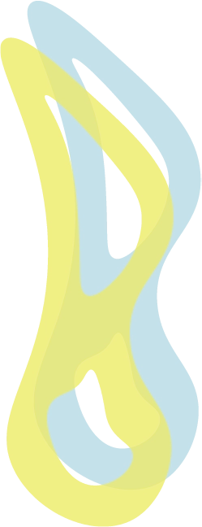
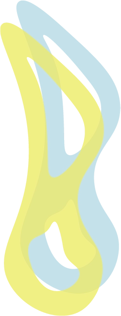

Prøv vores nyeste smag
Introduktionen af vores nyeste sensation, en variant af den velkendte og elskede øl TrøjborgBryg Pilsner, præsenterer nu sin spændende søster med en forfriskende frugtagtig twist! Selvfølgelig stadig alkoholfri.
Pilsner Citrus
Hvis du sætter pris på det sødere og mere livlige i din øl, er denne nye bryg lige noget for dig!

Næringsindhold:
- Kalorier: 43 kcal pr. 100 ml
- Kulhydrater: 7 gram pr. 100 ml
- Sukker: 2.97 gram pr. 100 ml
- Protein: 0,5 gram pr. 100 ml
- Fedt: <0,5 gram pr. 100 ml
Ingredienser:
- 2 liter vand
- 275 gram maltet byg
- 12 gram humle
- 5 gram gær
- Citrusskal og saft
 
